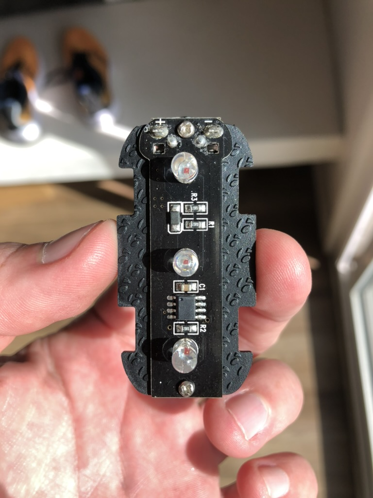
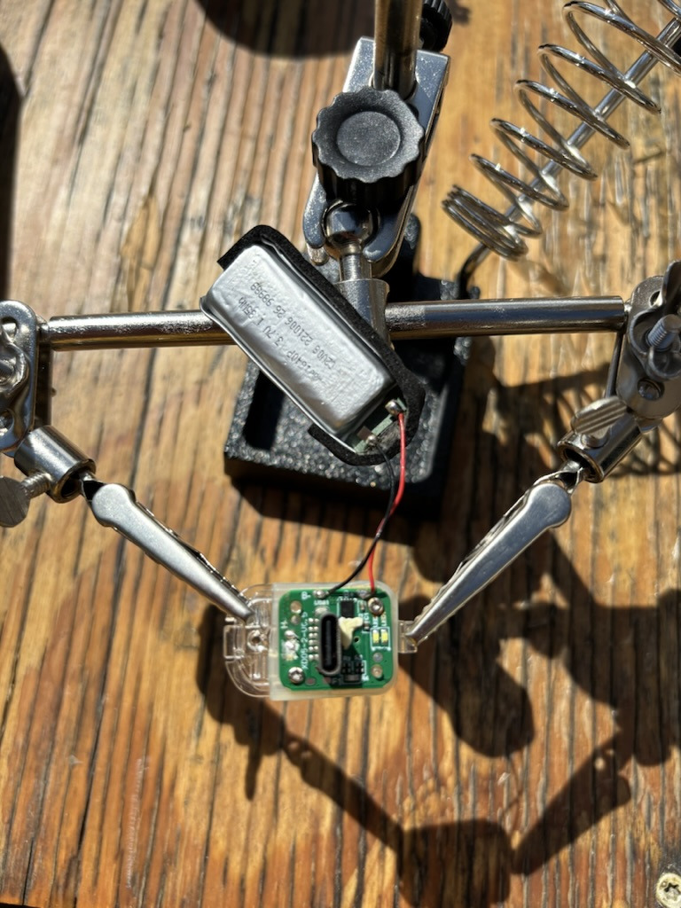
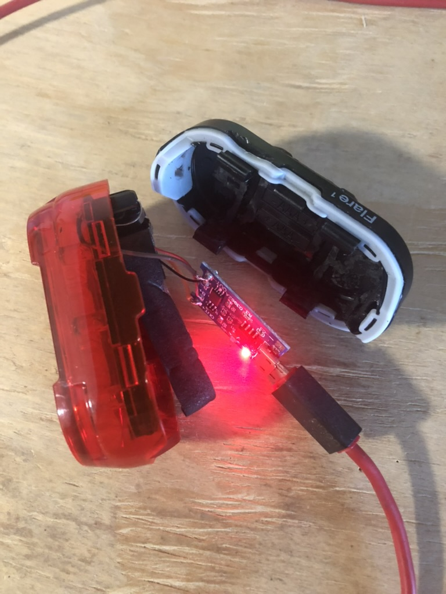

This was a quick hack to convert my bicycle tail light from using AAA batteries to a rechargeable lithium cell. The spare battery came from a disposable vaporizer found on the sidewalk.
This is the inside of the bike light I used. The whole thing is a waterproof shell that comes apart so you can replace batteries in the back, and I wanted to preserve the waterproof seal.

I used a dremel to rip out all the battery support stuff and made just enough space to squeeze the new battery into the housing.
Battery components from the vape. 
I tried to reuse the charging board but there was too much vape-specific stuff on there so I just clipped the wires and replaced with a USB mini board.
 Testing out the new charging board.
Testing out the new charging board.

All wired up, I just attached the battery wires directly to the contacts that were previously used by the AAA.
 Charging!
Quick and easy, no more replacing alkaline batteries. I’ve put over 1000 miles on this battery at the time of writing this, getting roughly 5hrs of battery life per charge.